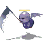
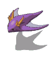

| 名 前 | 画 像 | HP | 攻 撃力 | 耐 性 | 弱 点 | メ モ | 持 ち物 | 出 現場所 | 詳 細情報 | 通 し番号 |
| けろべろす | 3200 | 408 | 光 | 闇 | 神殿を守る番犬だったが魔の力によって狂わされてしまった。 犬だけあって足が速い。 |
どら焼き ハンバーガー 300PN 500PN 600PN |
アプリエス神殿Lv18 クロップ洞窟Lv20 セルペンティナLv20 |
突進 体当たり3キャラ分 |
061 | |
| ぺがさす | 3600 | 408 | 光 | 闇 | 邪悪なモンスターと化した天馬。 魔法のブレスは人の正気を失わせる。 |
レモン みかん 210PN 300PN 500PN |
アプリエス神殿Lv18 カヤパの森Lv20 |
ジャンプ 突進 体当たり2キャラ分 ブレス(狙、混乱) 魔法1発(狙) |
062 | |
| どみにおん | 4800 | 408 | 地火光 | 闇 | 天使の力を秘めた恐るべき狂戦士。 光の魔法と剣を自在に使いこなす。 |
ハンバーガー いかソーメン 500PN 1000PN |
アプリエス神殿Lv18 パーヴェル庭園Lv20 |
広範囲攻撃 魔法3発(狙) 広範囲魔法(混乱) HP2000回復 ノースタン |
063 | |
| ばっとさん | 3400 | 474 | 闇 | 光 | 魔族の使い魔の1種。 闇をこよなく好み、光を恐れる。 |
レモン みかん 300PN 500PN 600PN |
エスピナ暗黒神殿Lv18 クロップ洞窟Lv20 |
魔法1発(狙) 魔法3発(狙) |
064 | |
| まじしゃん | 3600 | 474 | 闇 | 水 | 高位の魔術師の証の青い服をまとう中級魔族。 火柱と落雷を用いる。 |
ハンバーガー いかソーメン 500PN 600PN 650PN |
エスピナ暗黒神殿Lv18、Lv20 パーヴェル庭園Lv20 |
火柱(狙) 雷(狙、麻痺) 魔法6発(連射、狙) |
065 | |
| じん | 4800 | 474 | 地火闇 | 光 | 地獄に住むトカゲ。 闇の吐息を縦横無尽に撒き散らす。 |
みかん チキン 500PN 1000PN |
エスピナ暗黒神殿Lv18 ケノーピ火山Lv20 聖地クラプロートLv31 |
魔法1発(狙) 魔法6発(放射状) 魔法3発(狙) ブレス |
066 | |
| しにがみ |  | 3200 | 474 | 闇 | 光 | 人の魂を狩る事を楽しみとする中級魔族。 呪われた大鎌で、標的の首を狙う。 |
みかん チキン 500PN 1000PN |
エスピナ暗黒神殿Lv19、Lv20 クロップ洞窟Lv20 |
広範囲攻撃(貫通、呪、狙) ワープ 姿を消す 魔法3発(狙) 魔法2発 |
067 |
| そうりょ | 3600 | 474 | 闇 | 光 | 魔王を崇める中級魔族。 信仰の代償として手にした力により闇を自在に操る。 |
いかソーメン イチゴ 300PN 500PN 600PN |
エスピナ暗黒神殿Lv19、Lv20 (夢幻迷宮にも出没すると思います) |
魔法3発(狙、呪) 魔法1発(狙、呪) 広範囲魔法(狙、呪) HP1500回復 接触(呪) 近寄ると逃げる |
068 | |
| ふらんけん | 5600 | 474 | 地闇 | 風 | 巨大な体の人造人間。 雷をエネルギーとし、蓄えたそれを一気に放出する事も出来る。 |
チキン いぶりたまご 210PN 300PN 500PN |
エスピナ暗黒神殿Lv19、Lv20 クロップ洞窟Lv20 |
高速移動 体当たり3キャラ分 雷(麻痺) ブレス(麻痺) 雷使用時HP1500回復 ノースタン |
069 | |
| こぼるたん | 4000 | 528 | 地 | 風 | 30年の荒行に耐え、新境地に辿り着いたこぼると。 その一撃は岩をも砕く。 |
いかソーメン 210PN 300PN 500PN 新500PN |
セルペンティナLv20、Lv21 こぼるとの森2 ケノーピ火山Lv20 アプリエスLv17 |
体当たり3キャラ分 広範囲攻撃 ノースタン |
070 | |
| どるいど | 3600 | 528 | 水火 | 光 | 魔法の能力が達人域にまで達した上級魔族。 闇の力による呪縛を得意とする。 |
チキン いぶりたまご 300PN 500PN 600PN |
セルペンティナLv20 カヤパの森Lv20 |
魔法1発(狙) 魔法3発(狙) 広範囲魔法(呪、狙) HP1000回復 近寄ると逃げる |
071 | |
| くらうど | 5200 | 528 | 地水火 風闇光 |
魔王の魔力で生命体と化した霊。 自らの中で電気を発生させる事ができる。 |
イチゴ きすの天ぷら マスカット 1000PN 2000PN |
セルペンティナLv20 カヤパの森Lv20 |
魔法4発(凍結) 魔法5発(狙、凍結) 引き寄せ HP2000回復 接触(凍結) |
072 | ||
| がーごいる | 4400 | 600 | 水石 | 魔王に偽りの命を与えられた石像。 触れたものを石化する能力を持つ。 |
イチゴ マスカット 300PN 500PN 600PN |
セルペンティナLv20、Lv21 カヤパの森Lv20 |
魔法1発(狙、石化) 魔法3発(狙、石化) レーザー(追尾、石化) 接触(石化) 石化中(無敵) |
073 | ||
| もびるないと | 5600 | 600 | 地火風 | 水 | 魔王の魔力によって動き出した鎧。 その鉄球の威力は尋常ではない。 |
いぶりたまご ミルク 500PN 600PN 650PN |
セルペンティナLv21 ケノーピ火山Lv20 |
縄標1本(回転、広範囲攻撃) 縄標2本(回転、広範囲攻撃) 突進 |
074 | |
| おにざむらい | 7200 | 600 | 水火光 | 剣の名手として知られる上級魔族。武士道精神を重んじるため、正面から しか攻撃してこない。 | マスカット 骨付き肉 1000PN 5000PN |
セルペンティナLv21 ケノーピ火山Lv20 |
居合い切り(回避不能) 広範囲攻撃 |
075 | ||
| たいたん | 800000 | 1100 | 闇毒凍石 麻呪乱爆 |
『大陸落とし』の異名を持つ伝説の巨人。 悪魔も恐れるという世界最強のモンスター。 |
ミルク プロマイド9 1000PN 5000PN 1万PN |
セルペンティナLv28 | ぬん(めいどの突進+がいこつの広範囲攻撃) アルティメットシュート ジャッチメント(広範囲攻撃たくさん) エクスプロージョン(火柱4発) 雷雲召喚(雷4発、追尾) ニードルプラッシャー(縄標6本) その他、様々な広範囲攻撃、広範囲魔法、雨降らし、ビーム、追跡弾、引き寄せ、ブレス、ジャンプ、ビーバー、分身、地震 ノースタン |
076 | ||
| ごるごん | 4400 | 600 | 地風 | 地獄の険しい山の中で生きるイノシシ。 1度狙いをつけた獲物は絶対逃さない。 |
いぶりたまご ミルク 210PN 250PN 300PN |
ヒポリタの丘Lv21 (夢幻迷宮にも出没すると思います) |
体当たり4キャラ分 ブレス 魔法6発(乱射、石化) 接触(石化) |
077 | ||
| ですふらわー | 4400 | 600 | 闇 | 火 | 強い邪気を吸収して育った魔の花。 闇の波動によって敵の動きを封じる。 |
マスカット 骨付き肉 500PN 1000PN |
ヒポリタの丘Lv21 カヤパの森Lv20 |
魔法4発(放射状、2連続、麻痺) 障壁(麻痺) 接触(麻痺) |
078 | |
| おにぐも | 14400 | 950 | 風 | 水 | 地獄の暗がりに生息する巨大なクモ。 網状の糸にはマヒ毒が染み込んでいる。 |
ミルク 大トロにぎり 1000PN 2000PN |
クロップ洞窟Lv28、Lv20 | 引き寄せ 魔法4発 魔法12発(放射状) 体当たり2キャラ分 ジャンプ 巣(麻痺) |
079 | |
| おーが | 9600 | 950 | 地 | 風 | 力自慢の上級魔族。 深い傷を負わせると凶暴化して、力を倍増させて襲ってくる。 |
骨付き肉 メロン 1000PN 2000PN 5000PN |
クロップ洞窟Lv28、Lv20 聖地クラプロートLv31 |
突進 体当たり4キャラ分 魔法4発 魔法3発(狙) 怒りの一撃 |
080 | |
| ふぁいわーむ | 8000 | 1000 | 水火 | 闇 | 地獄の火山に住む虫。 毒性の強い液体を放出し敵をマヒさせる。 |
柿 チャーハン 500PN 1000PN 2000PN |
ケノーピ火山Lv29、Lv20 | ビーム(麻痺) 突進 体当たり3キャラ分 魔法6発(連射) 魔法10発(放射状) |
081 | |
| がいこつ | 7600 | 1000 | 水火 | 風 | 生前は剣豪と呼ばれた魔族達の骨。 死してなお、技のキレに衰えはない。 |
サバの味噌煮 ソーセージ 500PN 1000PN |
ケノーピ火山Lv29、Lv20 | ジャンプ 広範囲攻撃 突進 魔法6発(狙、連射) ノースタン |
082 | |
| きめいら | 12000 | 1000 | 水凍 | 魔族によって作られたライオンとヤギとヘビの合成獣。 様々な魔法も使える。 |
骨付き肉 メロン 65PN 70PN 100PN |
ケノーピ火山Lv29、Lv20 | ジャンプ 体当たり2キャラ分 追跡魔法3発 魔法3発(狙) 魔法1発(狙) |
083 | ||
| かまとろーる | 16800 | 1000 | 地火 | 水 | 禁断の少年愛に生きる孤高なる上級魔族。 その一方で、異性に対し恐怖を抱いている。 |
大トロにぎり いちごケーキ 1000PN 2000PN |
ケノーピ火山Lv29、Lv20 | 魔法6発(放射状) 魔法3発(狙) ジャンプ キス1発(狙、混乱) キス3発(狙、混乱) |
084 | |
| みのたん | 16800 | 1150 | 地 | 風 | 巨大な斧を操る牛頭の上級魔族。深い傷を負わせると凶暴化して、恐るべ き一撃を放ってくる。 | ドーナツ ひれステーキ 1000PN 2000PN |
聖地クラプロートLv31 ケノーピ火山Lv28、Lv20 |
魔法1発(狙) 突進 ジャンプ 広範囲攻撃 怒りの一撃 ノースタン |
085 | |
| らみあ | 12000 | 1150 | 水闇 | 火 | あらゆる生物を石へと変えてしまう事ができる上級魔族。 | メロン 焼きおにぎり 500PN 1000PN |
聖地クラプロートLv31 カヤパの森Lv20 |
魔法3発(狙、石化) 魔法2発(石化) レーザー1発(狙、石化) レーザー2発(狙、石化) 接触(石化) |
086 | |
| ぽせいどん | 12000 | 1150 | 地光 | 火 | 悪魔との契約で力を得た半魚人。 能力は契約前と比べ、格段に上昇している。 |
メロン 焼きおにぎり 1000PN 5000PN |
パーヴェル庭園Lv31、Lv20 | 体当たり3キャラ分 魔法4発 やり投げ(狙、貫通) ジャンプ |
087 | |
| だーどら |  | 8400 | 1150 | 地闇 | 水 | 闇にうごめく竜の変種。 その吐息は魔の力に満ちており、触れた物を呪縛する。 |
メロン 焼きおにぎり 500PN 1000PN |
パーヴェル庭園Lv31、Lv20 | ブレス(狙、呪) 魔法3発(狙) |
088 |
| さぼっく | 16800 | 1150 | 水 | 闇 | 花が咲くと同時に植物から動物へと変わる地獄のサボテン。 分身攻撃を使ってくる。 |
いちごケーキ 焼きおにぎり 1000PN 2000PN 5000PN |
パーヴェル庭園Lv31、Lv20 | 魔法5発 体当たり2キャラ分 分身(攻撃不可、魔法3発(狙)) 突進(怒る) |
089 | |
| くらげむん | 10000 | 1150 | 地水火光 | 闇 | 多くの属性攻撃への耐性を持つくらげさん。 深い傷を負わせると、自爆してくるのは同じ。 |
いちごケーキ おかゆ 1000PN 2000PN 3000PN |
パーヴェル庭園Lv31 | 魔法4発 引き寄せ 自爆 |
090 | |
| 名 前 | 画 像 | HP | 攻 撃力 | 耐 性 | 弱 点 | メ モ | 持 ち物 | 出 現場所 | 詳 細情報 | 通 し番号 |